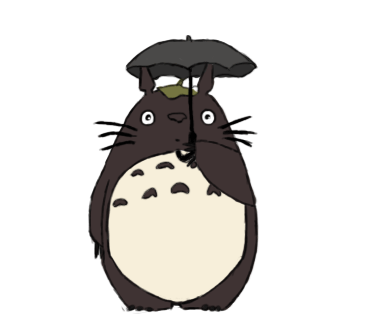
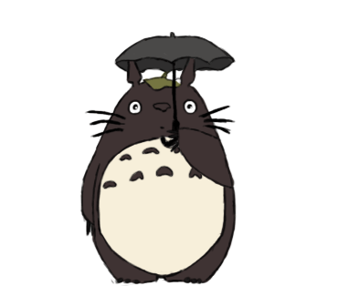

| Leisure Undertaking
Ah Yes! The thing that inspires me to work with much effort! Hobbies! As I type this hobby paragraph, I am listening to the acoustic music of spotify because it’s free, just kidding it’s because of the ideas it gives and it is a stress reliever. I love music so much that I never forget to strum and pluck my guitar every day! I was also in a band called ‘Imma Eat You’, where we compete in a certain battle of the bands in Del Pilar Academy, my high school alma mater. The song we played during our competitions is the Zombie by Cranberries because it gives nostalgic emotion to the audience and of course the bass that makes their head bang. I love it when our audience are cheering at us and singing the song that we are playing. It warms my heart also because this is one of my dreams, to be in the live stage performing some songs to make the crowd wild.  Unfortunately we lost the competitions because we are just premature band and the opposing bands have prepared better. Indeed that was one of my memorable days in my life because it gave me the realization that I have to striver harder in the music industry. Compositions of poems are also my kind of thing, I sometimes create poems for the people whom I love the most.
Unfortunately we lost the competitions because we are just premature band and the opposing bands have prepared better. Indeed that was one of my memorable days in my life because it gave me the realization that I have to striver harder in the music industry. Compositions of poems are also my kind of thing, I sometimes create poems for the people whom I love the most.
Reading memes on 9gag and Drew Borja’s Hunghang Flashbacks is making me sane in life because it is a reality check. Although it is full of sarcasm or satire article, it still depicts the status quo of this community as well as in the world. The Hunghang Flashbacks web comic is the first comic where I fell in love because of its art and creative imagination of the author. Also, the jokes and the simplicity of the comic began to appeal my aesthetic sense. Next are the memes, memes are like dark humorous way of challenging a person or a netizen to be exact. It was introduced to us, the millennial people wherein giving sides of a certain phenomenon occur because it is another way on giving information in a much more exciting and fun way. That’s why my political understanding about every country has widened.

The oh-so glorious pc master race! Wherein the best specs of computer technology is put to combine it and make a high end gaming engine. The games like DOTA 2, Battlefield, Farcry, Assassin’s creed, CS: GO, Call of Duty, Fallout, The Witcher and etc wherein you can play it in 60 frames per second, ultra high graphics is like a dream come true. For me, it sounds so amusing because I grew on a technologically advanced family where there are no limits on playing gadgets but still have responsibility on studying. The elite personal computer costs so much and I think that would take my first and second semester’s tuition in one fell swoop. I would sell my kidney on the black market just to have that great pc, no kidding. Gigabyte GTX 1080 TI and AMD Ryzen 7, this magnificent video card and processor would make me drool if I have this with a complete augmentation of different specs too! Sony’s Playstation 4 is my thing to because consoles are best for having a two player with my brother. Me and my brother loves to play the newly released NBA2k18. We often fight because we are always in a deadlock on playing with each other. 

Go Back to top
|


 
